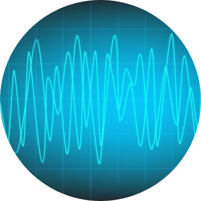

Subjects
(A30411) ANTENNAS & WAVE PROPAGATION
This is a 3 credit subject .Except unit-2 all units have 2 parts.
Text books:
- Antennas and Wave Propagation – J. D. Kraus, R. J. Marhefka And Ahmad S.Khan, TMH, New Delhi, 4th Ed., (Special Indian Edition), 2010.
- Electromagnetic Waves and Radiating Systems – E.C. Jordan And K.G. Balmain, Phi, 2nd Ed., 2000.
(A30412) LINEAR & DIGITAL IC APPLICATIONS
This is a 3 credit subject .Units 2,5 have 2 parts.
Text books:
- Op-Amps & Linear ICs - Ramakanth A. Gayakwad, PHI, 2003.
- Linear Integrated Circuits -D. Roy Chowdhury, New Age International (p)Ltd, 2nd Ed., 2003.
- Digital Fundamentals - Floyd and Jain, Pearson Education, 8th Edition, 2005.

(A30413) DIGITAL SIGNAL PROCESSING
This is a 3 credit subject .Units 1,2,5 have 2 parts.
Text books:
- Digital Signal Processing, Principles, Algorithms, and Applications, John G.Proakis, DimitrisG.Manolakis, Pearson Education /PHI, 2007.
- Discrete Time Signal Processing - A.V. Oppenheim and R.W.Schaffer, PHI, 2009.
- Fundamental ofDigital Signal Processing- LoneyLudeman, John Wiley, 2009.
(A30414) ELECTRONIC MEASUREMENTS & INSTRUMENTATION
This is a 3 credit subject .Only unit 5 have 2 parts.
Text books:
- Electronic instrumentation, second edition - H.S.Kalsi, Tata McGraw Hill, 2004.
- Modern Electronic Instrumentation and Measurement Techniques – A.D. Helfrick and W.D. Cooper, PHI, 5th Edition, 2003

Professional Elective I
(A30457) COMPUTER ORGANIZATION (Professional Elective I)
This is a 3 credit subject
Text books:
- “Computer Organization and Design: The Hardware/Software Interface”, 5th Edition by David A. Patterson and John L. Hennessy, Elsevier.
- “Computer Organization and Embedded Systems”, 6th Edition by CarlHamacher, McGraw Hill Higher Education.

ADC Lab
This is a 1.5 credit lab which includes 14 Experiments, minimum of 12 experiments will be conducted. Experiments link:
ADC LAB

DSP Lab
This is a 1.5 credit lab which includes 15 Experiments, minimum of 12 experiments will be conducted. Experments link:
DSP LAB
ELCS LAB
This is a 1.5 credit lab which includes 5 units.